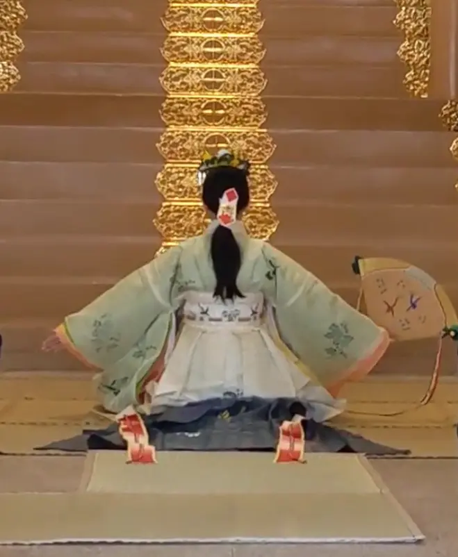
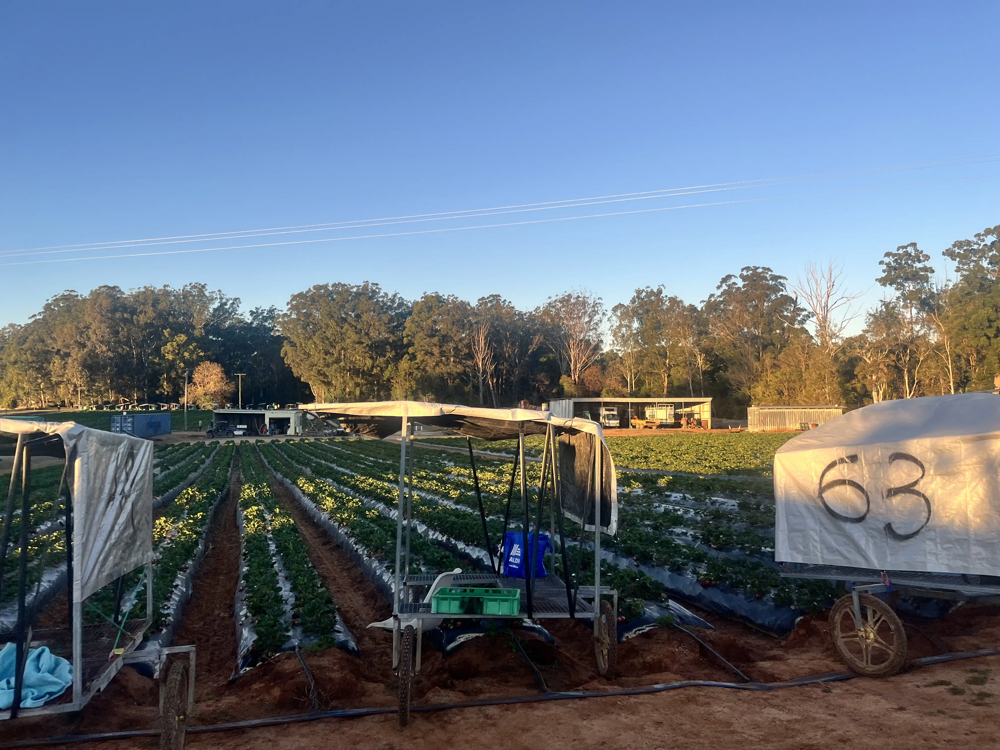

01.
Miko：静寂と誠実
7年間の巫女奉仕。1mmの妥協も許されない環境で、細部に心を配る「実直さ」を身体に刻みました。

7年間の巫女奉仕で培った「誠実な所作」と、
オーストラリアの大地で学んだ「生命力」。
相反する二つのルーツが、私のデザインの根幹です。
「MIKORAGI」は、巫女の誠実さと農業の躍動感、そしてそれらが調和した穏やかな状態（凪）を意味します。 異なる境界を越え、クライアント様の想いに光を当てる架け橋でありたい。そんな願いを込めています。

7年間の巫女奉仕。1mmの妥協も許されない環境で、細部に心を配る「実直さ」を身体に刻みました。

豪州のストロベリーファーム。泥にまみれ、現場で汗を流した経験は、泥臭く形にする「完遂力」の源です。
中村 友実 / Tomomi Nakamura
鹿児島県出身。Human Academy 鹿児島校 Webデザイン制作コース在籍。巫女として7年間奉仕した後、2023年より渡豪。帰国後、言葉にできない想いを形にするためWebデザインの道へ。